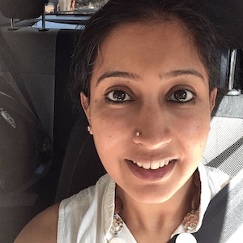

Organisers
Benedetta Catanzariti is a PhD candidate in Science, Technology and Innovation Studies at the University of Edinburgh. Her
research focuses on the social and organizational dynamics shaping the design of emotion recognition AI, as well as the data curation practices involved in the creation of face datasets.
Srrayva Chandhiramowuli is a Research Associate at the Machine Intelligence and Robotics Centre at International Institute of Information Technology Bangalore, India. Her research, as part of the Humanising
Automation project, focuses on the state of AI-based automation in India and how it might shape the future of AI-enabled work.
Suha Mohamed leads partnerships and strategy at Aapti, a public research institution where part of her research focuses on the nexus of artificial intelligence, data rights and labour - specifically the possibilities
of collective negotiation and bargaining in the data economy.

Sarayu Natarajan lis the Founder of Aapti Institute. She thinks about technology and society at Aapti, particularly state, citizenship, work, and AI—and about politics all the time.
Shantanu Prabhat in an HCI researcher working in the Google AI India and People AI Research team.
Noopur Raval is a postdoctoral researcher at the Tandon Engineering School at New York University. Her research focuses on the global political economy of algorithmic platforms and how they remediate social
contexts.
Alex Taylor co-directs the Centre for Human-Computer Interaction at City, University of London. His interests are in how technologies are co-constitutive of forms of knowing and being, and, as a consequence,
provide a basis for radical transformations in society.
Ding Wang is a senior HCI researcher from Google AI India and People AI Research team. Her research focuses on the practices, processes and organisations of work (e.g. the collection, annotation and documentation)
on data that is essential to ML and AI systems.